Casa Óga · Entregable 1, Parte D · 82.21 Factibilidad de Proyectos Data Driven · Grupo 2 · corte de datos 31/12/2025
Qué es este documento
Una hoja por vista del tablero. En cada una: la captura, qué significa cada
número y cada forma del gráfico, qué se decidió al diseñarla y contra qué fuente,
de dónde sale el dato y qué contestar si la cátedra pregunta.
Cómo está armado el tablero
14 vistas en un solo recorrido, una pregunta de negocio por vista. Tres grupos:
Diagnóstico (01-08, datos históricos), Operación (09-13, a quién se
contacta) y Decisión (14, qué se pide).
Cada vista se resuelve sin scroll, de 1152×640 a 1920×1080. Fuera de ese rango el
cuerpo scrollea, para no romper WCAG 1.4.4 al 200 % de zoom.
Un solo HTML autocontenido: datos embebidos, cero CDN, cero pedidos de red. Se
abre con doble clic. El aula puede no tener red.
Dos audiencias con dos cadencias: directorio mensual, Marketing semanal, como
pidió el negocio. No se partió en dos tableros, se marca por grupo de vistas.
Los controles
Filtros: región, categoría, segmento RFM y quintil. Toda combinación es una
suma de celdas ya resueltas por el pipeline.
Mes de corte: 25 cortes mensuales, dic 2023 a dic 2025. Mover el corte es ver
la trayectoria, que es lo que pidió la clase 4 ("mirar cómo vengo").
Drill-down: clic en una fila o barra de las vistas 03, 04, 06 y 07 fija ese valor como
filtro y salta a la lista Parte D §4.1.
Glosario: cada término subrayado abre su definición, su ecuación, el umbral contra el
que se lee y el archivo de donde sale. Los umbrales los toma del payload.
Los controles que no aplican a una vista se apagan con leyenda en vez de quedar
activos e inertes Nielsen H1.
Las siete preguntas de la Parte D y dónde se responden
Pregunta de negocio §1.2
Vista
¿Cuánta facturación anual está hoy en riesgo y qué parte de la base la explica?
01
¿El riesgo se concentra en los que más facturan o en los de menor valor?
03
¿La recompra a 90 días se mueve hacia la meta de 10-11 %?
05
¿Qué región y qué categoría concentran la exposición?
06 · 07
¿A cuántos alcanza a contactar Marketing y cuáles quedan sin cubrir?
09
¿A cuántos de esos clientes se los puede contactar sin incumplir el consentimiento?
10
¿La lista priorizada rinde más que el criterio actual (1,39 %)?
08
Las otras seis se agregaron: desde cuándo viene el problema
(02), dónde conviene gastar (04), cómo se reparte entre semanas (11), qué rindió la
campaña (12), con qué se la compara (13) y qué se decide (14).
Lo que obliga el apunte de la clase 4
"Dashboard: sostiene una decisión recurrente", no informa y cierra un ciclo. Cada
vista se juzga por si permite tomar una decisión concreta.
"Mirar el futuro pero también el pasado para ver cómo vengo" → el selector de corte,
la serie trimestral y la cohorte de la vista 02.
"Se debe poder explorar, debe haber movimiento" → filtros, corte móvil, drill-down y la
curva de cobertura, que se recorre con el mouse.
"Las preguntas del diseño son las que van a decidir las decisiones" → las 7 preguntas de la
Parte D son el índice de vistas.
Lo que el tablero no afirma
Que una campaña recupere los ARS 94,9 M. Es exposición, no recupero.
Que el proxy mida churn. Es una regla operativa sobre inactividad.
Que exista un modelo predictivo. Su lugar está reservado y rotulado.
Ninguna relación causal: no hay grupo de control, y la vista 13 existe para pedir uno.
00
Antes de la primera pregunta
definiciones · datos · validación
Las cuatro cosas que hay que decir antes de que las pregunten
Proxy
Un cliente está en riesgo si tiene 3 compras o más y su recency supera
máx(90 días, 1,5 × su propio gap mediano). Es una regla operativa sobre
inactividad, no una medición de churn: nadie dio de baja nada.
Exposición
Los ARS 94,9 M son la facturación anual que hoy está en manos de clientes sin
compra reciente. Exposición, no recupero.
Moneda
ARS del extracto, sin deriva de precios: el precio unitario implícito baja
7,6 % entre 2022 y 2025 y va plano en las siete categorías, contra un IPC que en el
período multiplicó los precios por más de 13. Por eso no se deflacta. Falta que el
negocio declare en qué base de precios está monto_neto.
Anualizado
Facturación del cliente ÷ años entre su primera compra y el corte, no hasta
su última compra. Por eso un cliente inactivo sigue pesando en el denominador.
Las bases que no se mezclan
Clientes con compra válida al corte
5.978
Elegibles (3 compras o más)
4.940
En riesgo
2.452 · 41,0 %
Gasto anual estimado de la base
204,6 M
Facturación acumulada desde 2022
550,2 M
Ventas reales 2025 (no es lo mismo)
225,0 M
Envíos de campaña, base del dataset
23.729
Envíos limpios (sin 200 duplicados exactos)
23.529
Casi toda pregunta incómoda sobre una cifra es una
pregunta sobre cuál de estas bases se usó. Cada vista lleva la suya escrita.
De dónde sale cada número
Dataset de la cátedra
Qué alimenta
Transacciones_clientes.csv 50.250 filas crudas
Riesgo, exposición, cohorte anual, quintiles, RFM, recompra trimestral. Las vistas 01 a 07 y la lista.
Clientes.csv 6.050
Consentimiento de marketing. Vistas 10, 11 y 14.
Campanias_marketing.csv 23.729
Embudo, compra a 7 días, criterios de orden, consentimiento. Vistas 08, 10, 12 y 13.
Tiendas.csv 28
Región de cada transacción. Vista 06.
Fidelizacion.csv 4.043
Contexto del caso, no alimenta ninguna cifra en pantalla.
Calendario.csv
Ídem.
La limpieza, en orden fijo
50.250 crudas → 50.000 tras sacar 250 duplicados de fila completa → 27.606
con id de cliente → 27.276 con monto positivo. Los cuatro conteos son salida del
pipeline, no un log. Ventana real de datos: 03/01/2022 a 29/12/2025.
Sin id de cliente queda el 44,8 % de las transacciones. Todo el análisis
corre sobre la base identificada y eso es un sesgo declarado, no un descuido.
Por qué las cifras se sostienen
El navegador no calcula riesgo, recency, quintiles ni RFM. Recibe una tabla de
contingencia ya resuelta y hace filtrar y sumar. Toda la aritmética con riesgo de
divergencia vive en Python.
134 anclas contra las cifras del wiki de la materia. Si una falla, el pipeline
corta y no hay tablero.
201.959 chequeos del payload contra una verdad independiente, más 606.270 de
paridad entre Python y el JavaScript del navegador. La grilla de filtros se valida
completa: 2.688 combinaciones × 25 cortes.
Cinco anclas son booleanas: fijan el hallazgo que el título afirma, no solo la
cifra. Si la cohorte dejara de pesar menos en 2025, o si algún criterio se separara de
la vara por tasa, el build corta y el título se reescribe.
La herramienta, y por qué no Looker ni Tableau
Tres motivos: exigen red en el aula, obligan a subir los datos a un
tercero y no dejan abrir el tablero con doble clic. El dataset de cátedra es sintético
(los correos de Clientes.csv usan dominios reservados de la RFC 2606), pero el mismo
tablero sobre el padrón real de Casa Óga cae bajo la Ley 25.326, así que el criterio se
fija ahora. El pipeline corre local, el tablero no sale de la máquina y en pantalla
nunca aparece nombre ni mail, solo código de cliente
Parte D §6.1.
01D0
Cuánto hay en riesgo
diagnóstico
Pregunta¿Cuánta facturación anual está hoy en riesgo y qué parte de la base la explica?
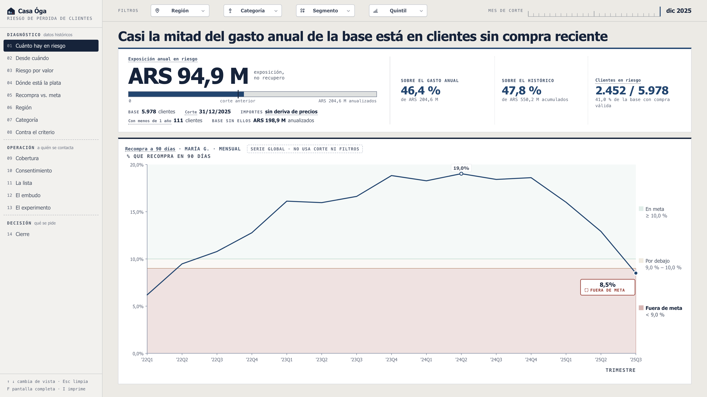
Título en pantalla: "Casi la mitad del gasto anual de la base está en clientes sin compra reciente"
Qué muestra
ARS 94,9 M: suma del gasto anualizado de los 2.452 clientes en riesgo al corte.
Al lado, pegado al número y no al pie, "exposición, no recupero".
El riel bajo la cifra: qué parte de los 204,6 M de gasto anual estimado ocupa esa
exposición. La marca vertical es el corte anterior, así se ve si subió o bajó sin
cambiar de vista.
La línea de encuadre: base 5.978 clientes, corte 31/12/2025, importes sin deriva
de precios y cuántos tienen menos de un año de historia. Sin eso el número no se puede leer.
Las tres comparaciones: 46,4 % del gasto anual, 47,8 % del histórico acumulado,
2.452 de 5.978 clientes. Van rotuladas una por una porque 46,4 % y 47,8 % no miden lo mismo.
La serie de recompra: 2022Q1 a 2025Q3 con las tres franjas del semáforo
(en meta ≥10 %, por debajo 9-10 %, fuera de meta <9 %). Último punto 8,5 %.
De dónde sale
Transacciones_clientes.csv. Todo se recalcula desde cero en cada corte usando solo las
transacciones anteriores a esa fecha, nunca con MAX(fecha).
La serie de recompra es global y no responde a los controles.
Decisiones y por qué
El número grande ocupa el arriba a la izquierda, no el título. Un número solo comunica
más como texto grande que dentro de una tabla o de una barra única
Knaflic cap. 2, pp. 38-40.
El título da la lectura y no repite la cifra que está doce píxeles más abajo. Con un
filtro puesto la frase sigue siendo cierta porque se deriva del mismo número.
El estado del indicador es posición dentro de una franja, no una pastilla de color, y
cada zona lleva su rango escrito. El negocio pidió no depender solo del color
relevamiento 18/08.
La tarjeta declara dueña y cadencia ("María G. · mensual"). Un indicador sin dueño ni
periodicidad no está bien definido clase 2.
El semáforo de "clientes en riesgo" se sacó por decisión del equipo. Su umbral
(38-42 %) sigue viajando en el payload y está en el glosario, a un toque sobre el rótulo.
Si preguntan
¿Se recuperan los 94,9 M? No. Es la facturación anual que hoy está en
clientes sin compra reciente. Medir recupero exige una campaña contra un grupo de control,
que es justo lo que pide la vista 13.
¿Y si el umbral no fuera 90 días? A 60 días la exposición da 95,1 M y a
120 días 93,5 M. El valor casi no depende del umbral elegido, y decirlo juega a favor.
02D1
Desde cuándo
diagnóstico
Pregunta¿El problema es de este año o viene de antes?
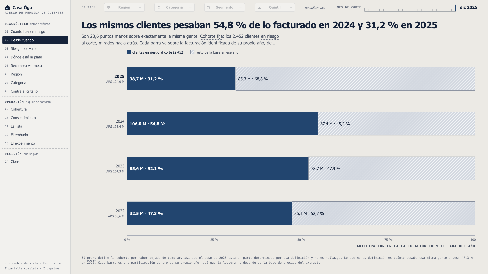
Título en pantalla: "Los mismos clientes pesaban 54,8 % de lo facturado en 2024 y 31,2 % en 2025"
Qué muestra
Una barra al 100 % por año, de 2025 arriba a 2022 abajo. Cada una es la facturación
identificada de ese año, escrita bajo la etiqueta: de 68,6 M en 2022 a 193,4 M en 2024.
El tramo de acento es lo que facturaron, en ese año, los 2.452 clientes que hoy
están en riesgo. El resto de la base va con trama.
La lectura completa: 47,3 % en 2022, 52,1 % en 2023, 54,8 % en 2024 y 31,2 % en 2025.
Los mismos clientes explicaban más de la mitad de lo facturado dos años seguidos.
De dónde sale
Serie facturacion_anual_cohorte, agregada al pipeline el 27/08.
Se calcula por corte: la cohorte es la del corte activo. Anclada con sus cuatro cifras y con
un ancla booleana sobre el hallazgo.
Decisiones y por qué
Reemplazó a la vista de exposición contra las dos bases. Esa pregunta ya la
contestan la vista 01 (la cifra) y la 03 (el reparto); lo que faltaba era el eje del tiempo
sobre la misma gente.
Cohorte fija, no la tasa de riesgo de cada año. Son dos cosas distintas y no tienen
por qué coincidir.
Cada barra al 100 % sobre su propia base: entre 2022 y 2024 la facturación
identificada casi se triplica, así que comparar montos crudos no diría nada.
La circularidad va declarada al pie: el proxy define la cohorte por haber dejado de
comprar, así que el 31,2 % de 2025 está en parte determinado por la definición. Lo que no
es definición es cuánto pesaba esa misma gente antes.
No acepta filtros. Abrirla por celda serían ocho columnas más sobre 17.136 celdas,
casi un mega de payload, contra la promesa del archivo único. Se apagan con leyenda.
Si preguntan
¿Por qué cae tanto en 2025? Porque son, por definición, clientes que
dejaron de comprar: parte de esa caída es el proxy. El dato defendible es el otro, que esta
misma gente sostenía más de la mitad de la facturación en 2023 y 2024.
¿Es la tasa de riesgo de cada año? No. Es una sola cohorte, la de hoy,
mirada hacia atrás. La tasa por corte es la serie de la vista 01.
03D2
Riesgo por valor del cliente
diagnóstico
Pregunta¿El riesgo se concentra en los que más facturan o en los de menor valor?
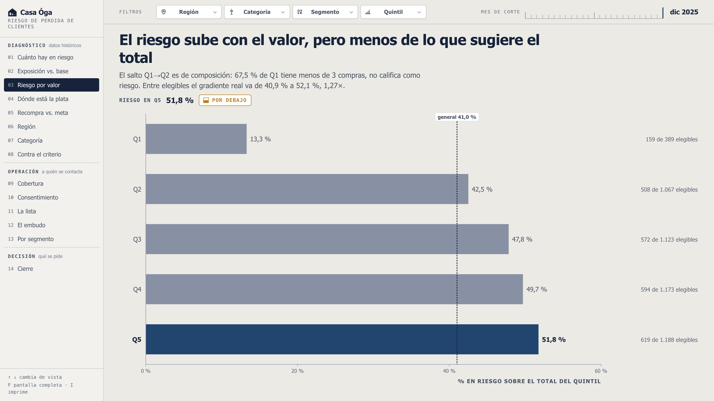
Título en pantalla: "El salto de 13,3 % a 51,8 % es composición: 67,5 % de Q1 no califica"
Qué muestra
Cada quintil es una barra al 100 % de sus clientes, partida en tres: en riesgo
(acento), elegible sin riesgo (gris) y no elegible, con menos de 3 compras (trama).
El bloque de acento arranca en cero y es el KPI de la Parte D, riesgo sobre el total
del quintil: 13,3 % en Q1, 51,8 % en Q5.
La cuña de trama se derrite de Q1 a Q5: es la causa del salto, dibujada.
Nota al costado: la tasa entre elegibles, con su encabezado. Línea de referencia en
41,0 %, la tasa general.
Arriba, el KPI de Q5 con su semáforo: verde <45 %, ámbar 45-52 %, rojo >52 %.
De dónde sale
Quintiles por corte sobre la facturación histórica acumulada. Elegible es tener 3 compras
o más. Los umbrales del semáforo son los de la Parte D §2.1.
Decisiones y por qué
Pasó de barra simple a composición al 100 % para que la causa esté dibujada y no
solo escrita. El bloque de acento sigue siendo el mismo largo que dibujaba la barra simple:
el denominador del KPI no se toca.
La tasa entre elegibles no se dibuja: es una razón entre dos bloques que el ojo no
calcula. Va como nota, igual que en la vista 04.
El título dice el salto y su causa en la misma frase: 67,5 % de Q1 tiene menos de 3
compras y por definición no puede estar en riesgo.
Con una base de elegibles menor a 30, la bajada declara los conteos en vez de la
tasa: 1 de 2 da 50 % y al lado de una tasa de cientos de casos parece medir lo mismo.
Clic en una fila fija ese quintil como filtro y salta a la lista.
Si preguntan
La Parte D decía que Q5 casi cuadruplica a Q1. Ese 3,89× compara
poblaciones distintas: Q1 tiene 32,5 % de elegibles y Q5 el 99,3 %. Entre clientes comparables
el ratio es 1,27×, de 40,9 % a 52,1 %. El KPI sigue siendo correcto; lo que no se sostiene
es leerlo como un gradiente de riesgo por valor. enmienda 2
¿La barra no debería arrancar en cero? El bloque que importa arranca en
cero. Los otros dos son el resto de la composición del quintil.
04D3
Dónde está la plata
diagnóstico
Pregunta¿Dónde conviene gastar el presupuesto de retención?
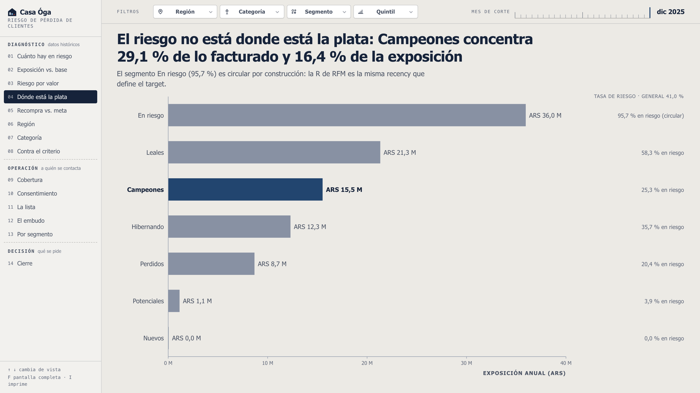
Título en pantalla: "Campeones: 29,1 % de lo facturado y 16,4 % de la exposición"
Qué muestra
Cada barra es una sola cifra: cuánto pesa el segmento en la facturación menos
cuánto pesa en la exposición, en puntos de participación.
A la derecha, más plata que riesgo: Campeones +12,7, Perdidos +6,6, Potenciales
+5,2. A la izquierda y con trama, más riesgo que plata: En riesgo −17,9, Leales −6,0,
Hibernando −0,8.
Columna derecha: la exposición en pesos de cada segmento, con su barra de magnitud.
Campeones 15,5 M, En riesgo 36,0 M, Leales 21,3 M, Hibernando 12,3 M.
El desvío de En riesgo va rotulado circular: la R de RFM es la misma recency que
define el target.
De dónde sale
Participación sobre los 550,2 M facturados y los 94,9 M de exposición del corte. R, F y M
son quintiles de rank; los siete segmentos son reglas excluyentes con orden fijo, escrito en
el contrato de datos.
Decisiones y por qué
Se dibuja la resta y no las dos distribuciones. El título es una comparación entre
dos participaciones, y el formato anterior le pedía al lector que la hiciera de memoria.
El orden de la resta lo fija el signo: el negativo tiene que ser el mal desempeño.
Al revés, el −12,7 le tocaba a Campeones, que es justamente el segmento sano.
Lo que el formato pierde son los niveles: un segmento chico y uno grande pueden dar
el mismo desvío. Por eso la exposición va como columna al costado.
El eje dice puntos de participación, no pérdida esperada. No hay ninguna probabilidad
aplicada a ningún cliente.
Se sacó del título la frase de la Parte D, "con la tasa más baja": era falsa. Campeones
es el cuarto más bajo de siete enmienda 1.
Si preguntan
¿Dónde gasto el presupuesto? Donde hay plata expuesta. Campeones aporta
15,5 M con la tasa más baja de los segmentos grandes; Leales y En riesgo están sobreexpuestos
y son los que la campaña tiene que atacar primero en tasa.
¿"Puntos de participación" es un porcentaje? No, es la resta de dos
porcentajes. Por eso lleva signo y se lee en puntos.
05D4
La recompra contra la meta
diagnóstico
Pregunta¿La recompra a 90 días se mueve hacia la meta de 10-11 % o sigue en la línea base de 8-9 %?
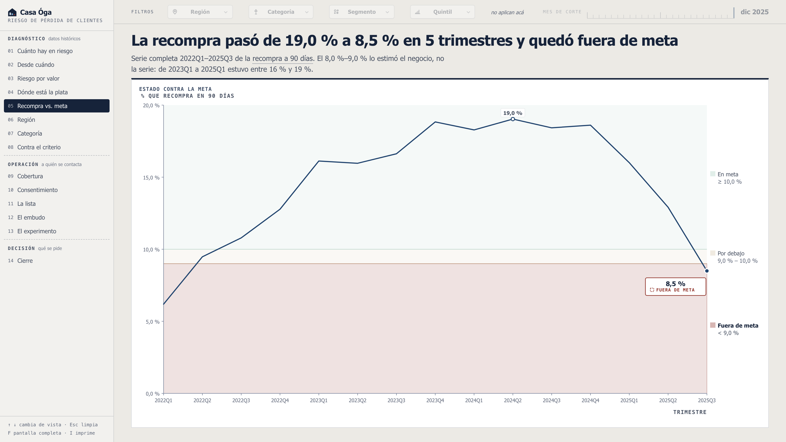
Título en pantalla: "La recompra pasó de 19,0 % a 8,5 % en 5 trimestres y quedó fuera de meta"
Qué muestra
Serie trimestral de la tasa de recompra a 90 días, 2022Q1 a 2025Q3.
Tres franjas con su rango escrito: en meta ≥10,0 %, por debajo 9,0-10,0 %, fuera de
meta <9,0 %. El estado es la franja donde cae la línea.
Pico marcado en 19,0 % (2024Q2) y último punto en 8,5 % con la etiqueta de estado.
El 8-9 % que estimó el negocio queda en el borde entre las dos franjas bajas. Es una
estimación de ellos, no un nivel de la serie.
De dónde sale
Transacciones_clientes.csv. Un trimestre entra solo si su cierre más 90 días cae dentro del
horizonte real de datos, que termina el 29/12/2025. Por eso la serie corta en 2025Q3 y no hay
un 2025Q4 con media ventana.
Decisiones y por qué
Tiempo en línea, no en barras. El tiempo en barras genera un efecto escalera
artificial Knaflic cap. 2, pp. 45-46.
El título dice cinco trimestres y no "cuatro seguidos" como la Parte D: la caída no es
monótona, 2024Q3 baja a 18,4 y 2024Q4 sube a 18,6 enmienda 4.
Los trimestres sin ventana completa se cortan, no se interpolan. Un punto inventado
en el extremo derecho es el que más se mira.
El eje Y se trunca solo si el cero se come más de una cuarta parte del alto, y en ese
caso lo declara con marca de corte. La regla de arrancar en cero es sobre barras: el
largo de una barra es la cifra, la altura de un punto no.
Corte y filtros se apagan con leyenda: la serie es global.
Si preguntan
¿De dónde sale la meta de 10-11 %? La declaró el negocio en el
relevamiento del 18/08 como meta preliminar del primer año, explícitamente abierta a que el
equipo la ajuste con el diagnóstico. El 8-9 % es una estimación de ellos y el dato solo la toca en el
último trimestre: de 2023Q1 a 2025Q1 la recompra estuvo entre 16 % y 19 %, así que la meta
de 10-11 % queda por debajo del nivel de 2024. Vale decírselo al directorio antes de que
lo pregunte.
¿Por qué el indicador del directorio es este y no la exposición? Porque
la exposición no tiene meta: se sigue su variación. La recompra tiene meta, umbrales, dueña y
cadencia, que es lo que hace a un indicador bien definido.
06D5a
Región
diagnóstico
Pregunta¿Qué región concentra la exposición?
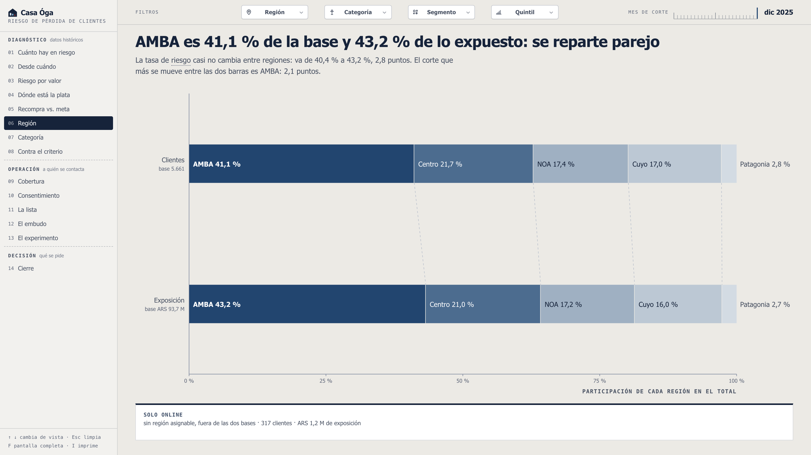
Título en pantalla: "AMBA es 41,1 % de la base y 43,2 % de lo expuesto: se reparte parejo"
Qué muestra
Dos composiciones al 100 % alineadas: arriba cómo se reparten los clientes (base
5.661), abajo cómo se reparte la exposición (base ARS 93,7 M).
Los conectores punteados unen el mismo corte en las dos barras. Su inclinación es la
diferencia entre las dos composiciones.
AMBA: 41,1 % de los clientes y 43,2 % de la exposición, 2,1 puntos, el corte que más
se mueve. La tasa de riesgo, en la bajada, va de 40,4 % a 43,2 %: 2,8 puntos.
Solo online queda aparte, bajo línea divisoria y fuera de las dos bases: 317
clientes, ARS 1,2 M, sin región asignable.
De dónde sale
Transacciones cruzado con Tiendas.csv, 28 tiendas. La región de un cliente es la tienda
donde concentra su gasto hasta el corte, regla escrita al pie de la vista. Sin ninguna compra
física, cae en Solo online.
Decisiones y por qué
Una concentración sin su referencia no se puede juzgar. "AMBA concentra el 43,2 %"
pesa distinto sabiendo que AMBA es el 41,1 % de la base, y eso es lo que la barra de pesos
sola no daba.
Un solo orden para las dos barras. Si cada una se ordenara por lo suyo, el conector
mediría el reordenamiento en vez de la diferencia.
Escala fija de 0 a 100 %: el gráfico queda inmune al filtro, nada se puede inflar
recortando la base.
La tasa de riesgo baja a la bajada, que es donde vivía su planitud, y no compite con el
dibujo.
Solo online se declara en vez de esconderse: no tiene región, y meterlo adentro
desmentía la lectura del reparto.
Si preguntan
¿Hay una región problema? No. 2,8 puntos de tasa entre la más alta y la
más baja, y 2,1 puntos de desvío entre las dos composiciones. La vista sirve para descartar
la lectura geográfica, que es un resultado útil.
¿Y las 28 tiendas? La apertura por tienda está declarada fuera de
alcance de la V1, aunque le sirve a Lucía O. de Operaciones Parte D §6.1.
07D5b
Categoría
diagnóstico
Pregunta¿Qué categoría concentra la exposición?
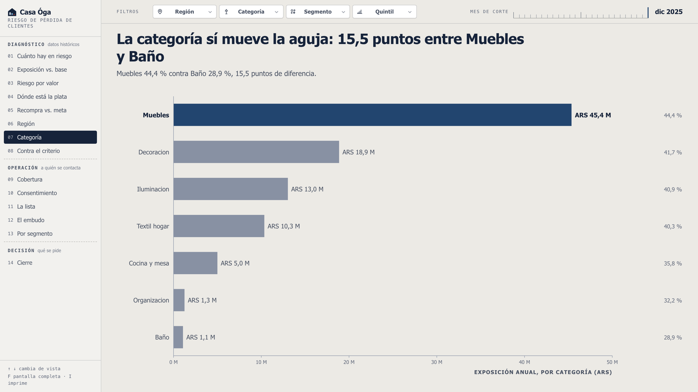
Título en pantalla: "Muebles ocupa 47,8 % de la exposición con 31,7 % de los clientes"
Qué muestra
Gemelo exacto de la vista anterior: mismo formato, misma escala, mismos conectores.
El par se lee comparando formas entre pantallas.
Muebles: 31,7 % de los clientes y 47,8 % de la exposición. Todas las demás categorías
pierden participación al pasar de personas a pesos, y por eso los conectores se corren todos
hacia la derecha.
La tasa de riesgo, en la bajada: 44,4 % en Muebles contra 28,9 % en Baño, 15,5 puntos,
contra los 2,8 de región.
Al pie: Organizacion tiene 199 clientes y Baño 166 (el tablero las rotula sin tilde, como vienen del dataset). Las tasas del extremo bajo se mueven
con pocos casos.
De dónde sale
Categoría donde el cliente concentra su gasto hasta el corte, sobre las 7 del dataset. Misma
tabla de contingencia que el resto: región × categoría × RFM × quintil, resuelta por corte.
Decisiones y por qué
El par es el argumento: la región se reparte pareja y la categoría no. Por eso las
dos vistas comparten formato y escala; con formatos distintos la comparación no se puede
hacer de memoria.
La afirmación "todas las demás pierden participación" se chequea antes de escribirla:
con otro filtro puede ser falsa, y entonces no se escribe.
La amplitud en puntos se recalcula en cada render, también con filtros puestos. Nada está
escrito a mano en el título.
Clic en un tramo fija esa categoría y salta a la lista.
Si preguntan
¿Se puede accionar sobre Muebles? Es la hipótesis que abre, no una
conclusión. Muebles tiene ciclo de recompra largo por naturaleza, y separar eso del abandono
real necesita el modelo.
¿Por qué la tasa no está en el gráfico? Sería un segundo eje encubierto
sobre una escala que no es la del dibujo. Va en la bajada, con sus dos extremos nombrados.
08D6
Contra el criterio actual
modelo predictivo · en desarrollo
Pregunta¿Conviene cambiar el criterio con el que se arma la lista?
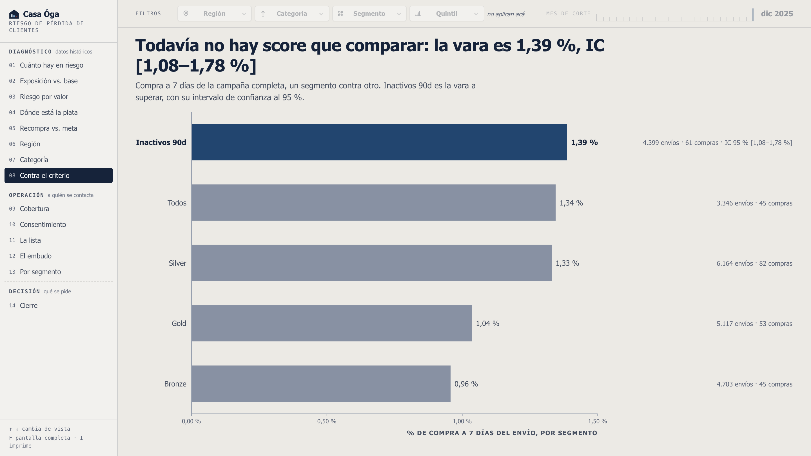
Título en pantalla: "Cambiar de criterio no gana compras y cuesta de 17,4 M a 37,2 M de cobertura"
Qué muestra
Arriba, punto con intervalo de Wilson al 95 % por criterio. El primer renglón es el
lugar reservado al score, vacío y rotulado. El segundo es la vara: Inactivos 90d, 1,39 % sobre
4.399 envíos y 61 compras. La banda gris es su intervalo.
Los tres alternativos caen dentro de esa banda: exposición 1,42 %, Q5 con recency > 180 d
1,72 %, Hibernando 0,84 %, azar 1,18 %.
Abajo, la tabla de la decisión: alcance, compras esperadas con su intervalo,
exposición cubierta, costo contra el criterio actual y veredicto.
Ordenar por exposición cubre 49,5 M con 800 contactos. Q5 con recency > 180 d solo
llega a 525 clientes y cubre 32,1 M (−17,4 M); Hibernando llega a 490 y cubre 12,3 M
(−37,2 M); el azar cubre 31,0 M (−18,5 M).
De dónde sale
Serie criterios_orden, nueva. Cada criterio define un subconjunto
de la base en riesgo, se toman los 800 de mayor anualizado y se mide la tasa de las campañas
que ya salieron a esos mismos clientes.
Decisiones y por qué
Dejó de ser un ranking de barras. Los intervalos se solapan de a pares y, con tasas
iguales, el azar reproduce la amplitud observada en una de cada tres corridas: ordenar por
tasa dibujaba una diferencia que el dato no sostiene.
Las dos columnas tienen precisión distinta y ese contraste es la vista. La tasa sale
de una muestra chica y llega con un intervalo que se come cualquier diferencia; la cobertura
es aritmética de la base, sin ruido, y las diferencias son de decenas de millones. Por eso el
criterio se elige por cobertura y no por tasa.
La vara es Inactivos 90d porque es lo que Marketing usa hoy, no el más alto de los
cinco segmentos. Elegirla por ser la más alta habría sido sesgo de selección.
Compras esperadas = tasa × 800 envíos, con el intervalo propagado. No es un pronóstico,
es la aritmética de una tasa que ya se reporta.
Si preguntan
¿Esto prueba que el criterio actual es el mejor? Prueba que ninguna
alternativa gana compras de forma distinguible y que todas cuestan cobertura. No es un
experimento: los criterios no se asignaron al azar y sus bases se pisan entre sí.
¿Contra qué se va a medir el modelo? Contra 1,39 % de tasa y contra los
49,5 M de cobertura. Para decir que gana hay que salirse del intervalo, no ganar por una
décima.
09M0
Cobertura contra capacidad
operación
Pregunta¿A cuántos alcanza a contactar Marketing y cuáles quedan sin cubrir?
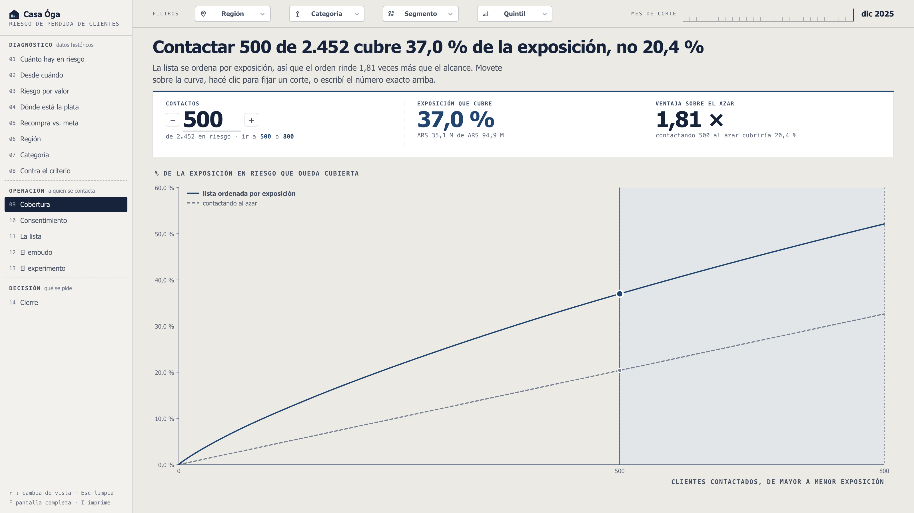
Título en pantalla: "Contactar 500 de 2.452 cubre 37,0 % de la exposición, no 20,4 %"
Qué muestra
Curva de concentración: cuánta exposición queda cubierta contactando a los primeros
k clientes de la lista ordenada por exposición. La punteada es contactar al azar.
La distancia vertical entre las dos curvas es la ventaja de ordenar. Con la capacidad
mínima de 500 contactos, el orden cubre 37,0 % (ARS 35,1 M de 94,9 M) contra 20,4 % al azar:
1,81×.
Los tres KPI de arriba son la lectura del punto elegido, no cifras fijas. Se escribe
el número exacto, se mueve de a diez o se salta a los dos cortes declarados, 500 y 800.
La cola aplanada de la curva es el excedente: el tramo de menor exposición.
De dónde sale
La lista del corte, ya ordenada por anualizado desde el pipeline. Las cifras de
concentración están ancladas contra client_facts. La capacidad de
500 a 800 contactos personalizados por mes es dato del relevamiento, no un supuesto del
equipo.
Decisiones y por qué
Reemplazó a la cuadrícula de unidades. La cuadrícula contaba cabezas, y el título
afirma que el orden importa más que el alcance: el dibujo no sostenía la frase. Con las dos
curvas la afirmación se verifica de un vistazo.
El punto se mueve porque la pregunta operativa es puntual: "si contacto a 640, cuánta
exposición cubro" se responde en la pantalla en vez de quedar para una planilla.
Se sacó la frase de la Parte C sobre el excedente como grupo de control natural. La
lista se ordena y se corta, así que el excedente es por construcción el tramo de menor
exposición: compararlo mide el ordenamiento, no la campaña
enmienda 3.
El control aleatorio estratificado queda para la V2 y tiene su propia vista, la 13.
Si preguntan
¿Alcanza la capacidad? En cabezas no: 500 de 2.452. En plata cubre el
37 %, casi el doble de lo que cubriría contactar a 500 al azar. Ese es el argumento a favor de
ordenar antes de cortar.
¿Por qué no contactar a más? El tope lo declaró el negocio. El tablero
muestra cuánto rinde cada corte para que la discusión sea sobre el número y no sobre la
intuición.
10M3
Consentimiento
operación
Pregunta¿La lista se puede ejecutar tal cual?
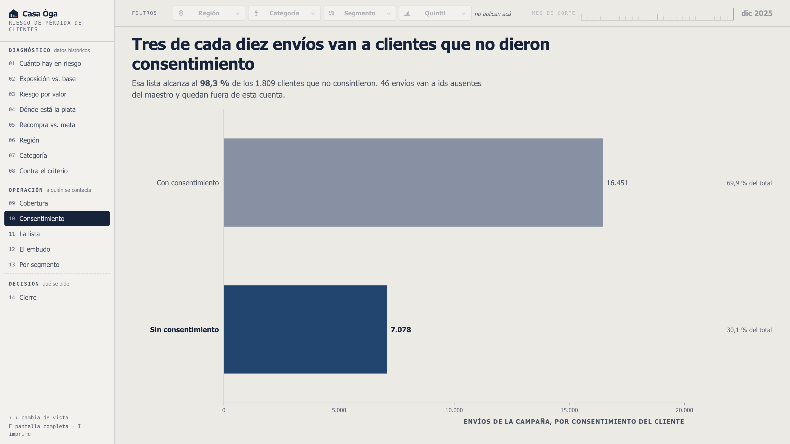
Título en pantalla: "El incumplimiento va de 29,5 % a 31,2 % en cuatro años: no baja"
Qué muestra
Una barra al 100 % por año, de 2025 arriba a 2022 abajo, cada una sobre su propia
base de envíos: 3.915 en 2023 contra 8.028 en 2024.
Tramo de acento: envíos con consentimiento. Tramo en terracota con trama: sin
consentimiento, bloqueante. La trama es lo que lo sostiene en blanco y negro.
La serie completa: 29,5 / 31,2 / 30,3 / 29,6 %. Amplitud de 1,7 puntos en cuatro
años.
En la bajada, lo que el gráfico no puede mostrar: 7.078 de 23.529 envíos (30,1 %
agregado) alcanzan al 98,3 % de los 1.809 clientes que no consintieron.
De dónde sale
Campanias_marketing.csv por año de envío, cruzado con acepta_marketing
de Clientes.csv. Serie consentimiento_anual, nueva. Los 46 envíos a
ids ausentes del maestro cuentan en la base de su año y no en el tramo bloqueante: no se pueden
clasificar.
Decisiones y por qué
Se abrió por año porque una cifra acumulada no distingue un incumplimiento que se
está corrigiendo de uno estable, y esa es la primera pregunta que hace cualquiera que lo
lee.
El wireframe anticipaba una caída de 38,2 % a 22,6 % y titulaba "la corrección ya está
en marcha". Los datos dan una tasa estable, así que el título dice eso. El hallazgo está
anclado: si algún día la serie se moviera de verdad, el build corta y el texto se
reescribe.
Al pie queda dicho que la meta es cero, no una tendencia: el mínimo de la serie sigue
siendo incumplimiento.
La vista va antes que la lista en el recorrido. "¿Se puede ejecutar?" es previa a "¿a
quiénes contacto?".
Si preguntan
¿Está mejorando? No. 1,7 puntos de amplitud en cuatro años es una tasa
estable, y el 30,1 % agregado no esconde ninguna corrección en marcha.
¿Es un problema del dato o de la operación? De la operación. El negocio
contestó que el consentimiento se registra bien al alta y que la plataforma de campañas no
lo usa como filtro obligatorio. Por eso la decisión 03 del cierre es un filtro previo y no un
proyecto de sistemas.
11M1
La lista
operación
Pregunta¿Cómo se reparte la lista entre las semanas de contacto?
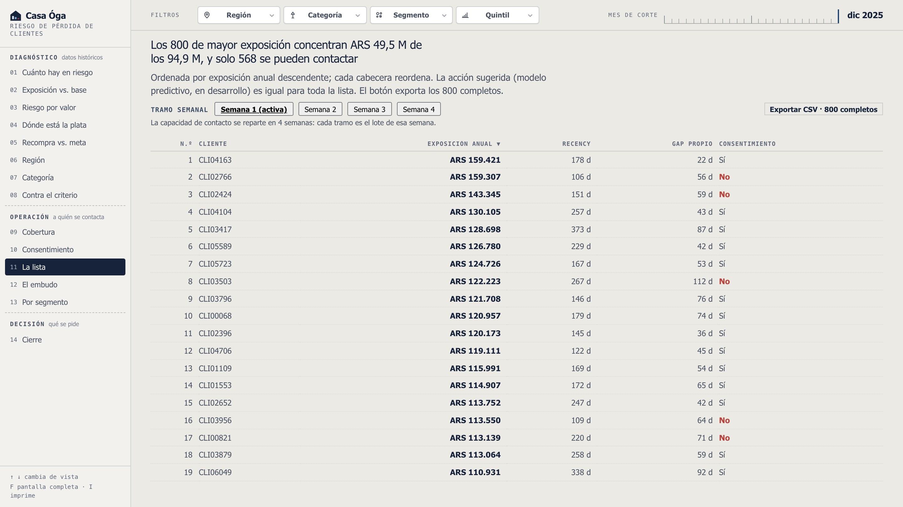
Título en pantalla: "La semana 1 vale 1,9 veces la semana 4 con los mismos 200 contactos"
Qué muestra
Una barra por semana de contacto: la exposición del lote de 200 que se contacta esa
semana. 17,2 M la primera contra 9,3 M la cuarta, con la misma cantidad de contactos.
La tabla: clientes, exposición, ticket medio, contactables, exposición alcanzable y
la composición dominante del tramo, que es el valor más frecuente de segmento, región y
categoría ("Campeones · AMBA · Muebles").
Total: 800 clientes, ARS 49,5 M, 568 contactables, 34,9 M alcanzables, 52,1 % de los
94,9 M de exposición.
El botón exporta las 800 filas cliente por cliente, con su tramo, y lleva el corte y
el filtro activo en el nombre del archivo y en las columnas.
De dónde sale
Los 800 salen del pipeline por corte, ya ordenados por exposición. Con un filtro puesto la
lista puede tener menos y los tramos son los que haya.
Decisiones y por qué
Las filas cliente por cliente salieron de la pantalla. Lo que no se veía es que los
cuatro lotes no valen lo mismo, y eso es lo que decide cómo se reparte el esfuerzo del mes.
Nadie llama leyendo de un proyector: la lista llega por CSV.
Composición dominante en vez de tres porcentajes: dice a quién se le habla esa semana,
que es lo que Marketing necesita para escribir el mensaje.
Solo código de cliente, sin nombre ni mail: el negocio dijo que alcanza con el
código y Clientes.csv trae datos personales alcanzados por la Ley 25.326.
Al pie se declara que repartir por exposición dejaría los tramos parejos y quitaría la
urgencia de la primera semana: es una decisión de Marketing, no del tablero.
Si preguntan
¿Dónde están los clientes? En el CSV, 800 filas con su tramo. La
pantalla contesta cómo se reparte el mes, que es la decisión semanal de Sofía R.
Filtré por una región y no queda nadie. El ranking se recorta sobre el
top 800 global por exposición individual. Un recorte puede concentrar exposición sin que
ninguno de sus clientes llegue al piso de ese top, y la vista lo declara.
12M2a
El embudo de la campaña
operación
Pregunta¿Qué rindió la campaña?
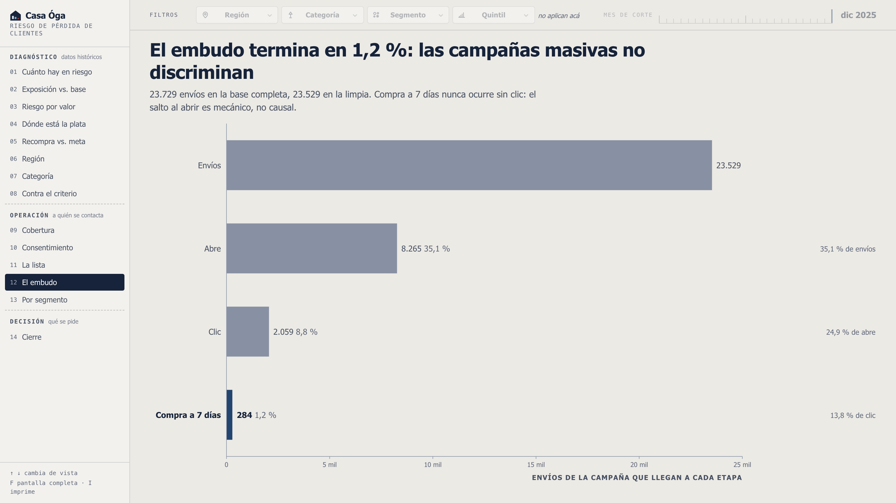
Título en pantalla: "El peor paso, Clic → Compra, pierde 86,2 % de lo que recibe"
Qué muestra
Un paso por barra, cada una al 100 % de su propia base: Envío → Abre sobre 23.529,
Abre → Clic sobre 8.265, Clic → Compra sobre 2.059. La base va escrita bajo cada etiqueta.
Tramo de acento: lo que avanza, con su conteo y su porcentaje. Trama: lo que se
pierde en ese paso.
El peor paso es Clic → Compra, que pierde 86,2 %. Ninguno pierde menos de 64,9 %.
Sobre el total, la compra a 7 días es 1,2 %: 284 de 23.529 envíos limpios.
De dónde sale
Campanias_marketing.csv. Base limpia de 23.529 envíos: los 200 que la separan de los 23.729
del dataset son duplicados exactos de fila completa, id de envío incluido.
Decisiones y por qué
Las cuatro etapas en conteo absoluto no se podían dibujar. Entre la primera y la
última hay tres órdenes de magnitud: la barra de compra a 7 días medía nueve píxeles sobre
827. Agrandarla habría sido exactamente el lie factor que la regla prohíbe, así que se cambió
la pregunta y se dibuja la conversión de cada paso.
Lo que se pierde es la escala absoluta: tres barras del mismo largo sobre bases
distintas se pueden leer como tres poblaciones iguales. Por eso cada fila lleva su base y la
bajada declara la compra sobre el total.
El título anterior, "las campañas masivas no discriminan", era una afirmación sobre
diferencias entre segmentos que un embudo agregado no puede sostener. Esa comparación es de
la vista 13.
Se avisa que ninguna compra ocurre sin clic previo, cero excepciones: el salto al abrir es
mecánico, no causal.
Si preguntan
¿1,2 % es poco? Es lo que rinde el envío masivo sin discriminar, y está
en el tablero para ser la referencia contra la que se juzga cualquier propuesta.
¿Se puede decir que la campaña funcionó? No con estos datos. Sin grupo
de control no hay contra qué medir el efecto incremental, y eso es lo que pide la vista
siguiente.
13M2b
El experimento
operación
Pregunta¿Con qué comparación se mide la próxima campaña?
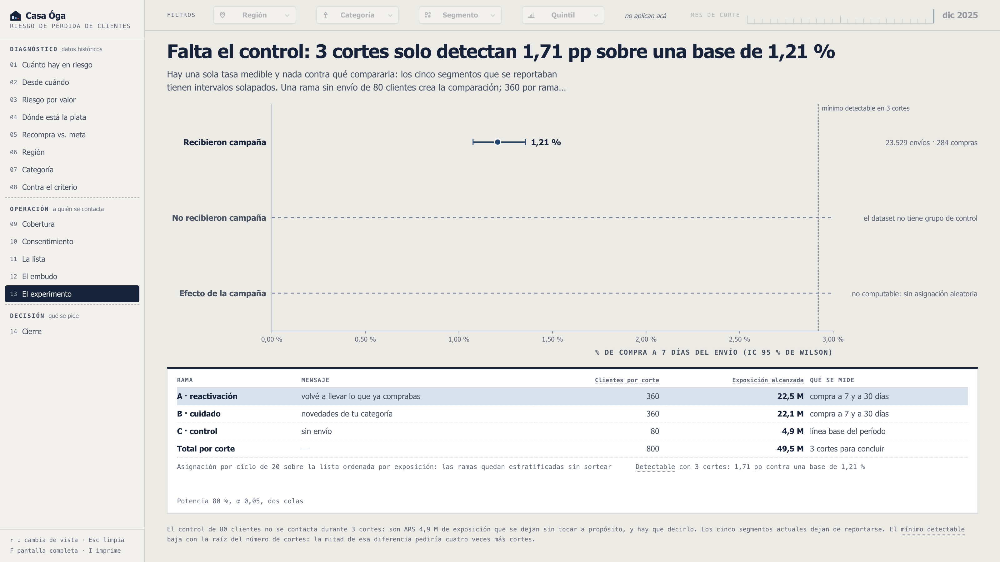
Título en pantalla: "Falta el control: 3 cortes solo detectan 1,71 pp sobre una base de 1,21 %"
Qué muestra
Tres renglones, y dos están vacíos a propósito. La única tasa medible es la de los que
recibieron campaña: 1,21 %, con su intervalo. "No recibieron campaña" y "efecto de la campaña"
van vacíos y rotulados: sin control y sin asignación aleatoria no son computables.
La punteada de la derecha es el mínimo detectable del experimento propuesto: 1,71 pp.
Que caiga tan lejos del punto medido es la advertencia.
La tabla del diseño: rama A reactivación 360 (22,5 M), rama B cuidado 360 (22,1 M),
rama C control 80 sin envío (4,9 M). Total 800 por corte, 3 cortes, potencia 80 % y α 0,05.
De dónde sale
Serie potencia_experimento, nueva. El reparto en ramas y la
cantidad de cortes viven en el payload junto con el mínimo detectable: separados, el número
podría terminar describiendo un experimento distinto del que la vista propone.
Decisiones y por qué
Reemplazó al reporte de los cinco segmentos. Su conclusión era "no se puede concluir
nada", repetida cada mes sobre los mismos datos. Un reporte que no cambia ninguna decisión no
justifica una vista.
Declarar el mínimo detectable antes de correr el experimento es lo que evita gastar
tres cortes para volver a escribir "no concluyente".
La asignación es determinística: un ciclo fijo de 20 sobre la lista ordenada por
exposición deja las ramas estratificadas sin depender de una semilla.
La propuesta se arma sobre el corte de referencia: en cortes viejos la base es más
chica (397 clientes en dic 2023) y las ramas no darían los 360 del cálculo.
El costo va dicho: el control de 80 clientes no se contacta durante 3 cortes, y son
ARS 4,9 M de exposición que se dejan sin tocar a propósito.
Si preguntan
¿Vale la pena tanto trabajo? Es al revés: sin control, cualquier número
que la campaña devuelva no se puede atribuir. Y con el tamaño que la operación admite solo se
detectan diferencias grandes: eso hay que saberlo antes.
¿Por qué solo 80 de control? Es lo que Sofía R. aceptó: una porción menor
y sin comprometer a los de mayor valor. El mínimo detectable baja con la raíz del número de
cortes: la mitad de esa diferencia pediría cuatro veces más cortes.
14D7
Cierre
decisión
Pregunta¿Qué se decide hoy?
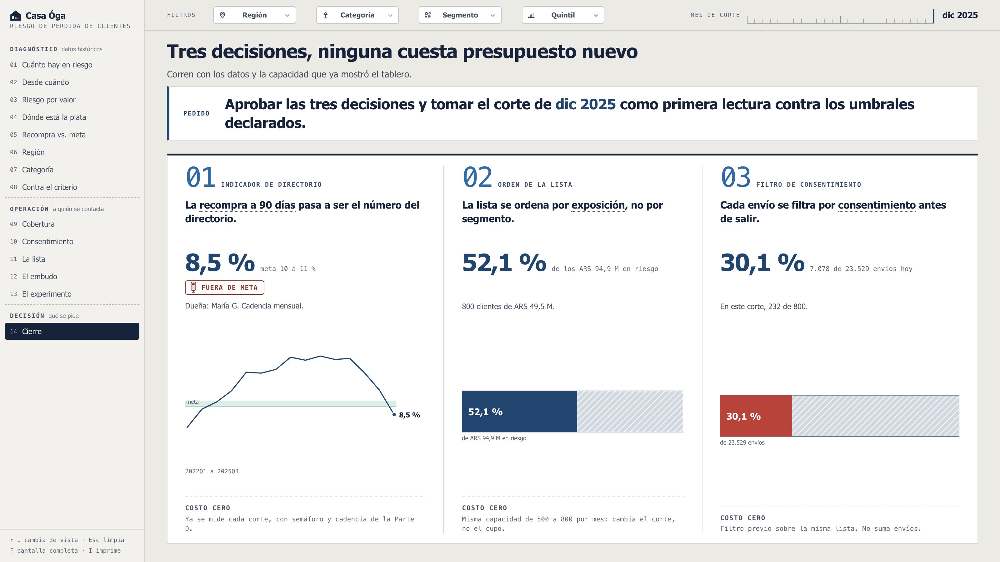
Título en pantalla: "Tres decisiones, ninguna cuesta presupuesto nuevo"
Qué muestra
Sin gráfico nuevo. Arriba el pedido: aprobar las tres decisiones y tomar el corte de
dic 2025 como primera lectura contra los umbrales declarados.
01 · Indicador de directorio. La recompra a 90 días pasa a ser el número del
directorio: 8,5 % contra meta 10-11 %, dueña María G., cadencia mensual.
02 · Orden de la lista. Se ordena por exposición, no por segmento: 800 clientes
concentran el 52,1 % de los 94,9 M.
03 · Filtro de consentimiento. Cada envío se filtra antes de salir. Hoy el 30,1 % de
los envíos no lo tiene, y en este corte son 232 de los 800 priorizados.
Cada artículo cierra con su prueba dibujada y con su costo.
Decisiones y por qué
Conclusión arriba, fundamento abajo, pedido explícitopirámide de Minto.
El pedido subió del pie al encabezado: al pie lo leía solo el que llegaba hasta abajo.
Las tres decisiones no piden presupuesto nuevo. Corren con los datos y la capacidad que
el tablero ya mostró, y eso es lo que las hace aprobables en una reunión mensual.
El pedido ya apareció en la vista 01. Esta es su desarrollo, no su primera aparición
lead with the ending.
Los tres artículos se recalculan con el corte activo: la cifra del artículo 02 se mueve si
se mueve el corte.
Si preguntan
El directorio hoy no mira esto. Correcto: mira ventas por tienda y canal,
clientes nuevos por mes, actividad de fidelización y desvíos contra presupuesto. La decisión 01
es exactamente que empiece a mirarlo, y cuesta cero porque el número ya se calcula.
¿Qué pasa si no aprueban nada? El tablero sigue siendo diagnóstico y el
Entregable 2 arranca sin indicador de seguimiento acordado. Las tres decisiones son la condición
mínima para que el proyecto tenga contra qué medirse.
✓
Una hoja para llevar
números y correcciones
Los números de memoria
Exposición anual al 31/12/2025
ARS 94,9 M
Sobre el gasto anual estimado (204,6 M)
46,4 %
Sobre lo facturado desde 2022 (550,2 M)
47,8 %
Clientes en riesgo
2.452 de 5.978 · 41,0 %
Elegibles (3 compras o más)
4.940
Peso de la cohorte, 2022 a 2025
47,3 / 52,1 / 54,8 / 31,2 %
Riesgo en Q5 · entre elegibles
51,8 % · 52,1 %
Riesgo en Q1 · entre elegibles
13,3 % · 40,9 %
Campeones: facturación y exposición
29,1 % · 16,4 % · 15,5 M
Recompra a 90 días · pico
8,5 % · 19,0 % (2024Q2)
Meta · línea base
10-11 % · 8-9 %
Amplitud de riesgo: regiones · categorías
2,8 pp · 15,5 pp
Muebles: clientes → exposición
31,7 % → 47,8 %
Capacidad de contacto por mes
500 a 800
500 contactos: orden contra azar
37,0 % · 20,4 % · 1,81×
Top 800 · exposición que concentra
ARS 49,5 M · 52,1 %
Semana 1 contra semana 4 · contactables
17,2 M · 9,3 M · 568
Embudo · peor paso
35,1 → 8,8 → 1,2 % · −86,2 %
Criterio actual, compra a 7 días
1,39 % [1,08-1,78]
Costo de cambiar de criterio
17,4 M a 37,2 M
Envíos sin consentimiento · por año
30,1 % · 29,5 a 31,2 %
Experimento: ramas · cortes · MDE
360/360/80 · 3 · 1,71 pp
Validación
134 anclas · 201.959 · 606.270
Las cuatro correcciones que conviene decir primero
Salen de recomputar las cifras de las partes ya entregadas con el pipeline del
tablero. Las cuatro ya están dichas en la pantalla que corresponde.
Campeones no tiene la tasa más baja. Tiene 25,3 % de clientes en riesgo y es el cuarto
más bajo de siete. Se dice: "concentra el 29,1 % de la facturación con 25,3 % en riesgo, menos
de dos tercios del 41,0 % general".
El gradiente por quintil está inflado por la elegibilidad. Sobre el total el ratio Q5/Q1
es 3,89×; entre clientes comparables es 1,27×. El KPI de la Parte D no cambia, cambia la
lectura.
El excedente de capacidad no es grupo de control. La lista se ordena y se corta, así que
el excedente es el tramo de menor exposición. El control estratificado es el de la vista 13.
La recompra no cae cuatro trimestres seguidos. Desde el pico: 19,0 → 18,4 → 18,6 → 16,0
→ 12,9 → 8,5. No es monótona.
Las trampas más probables
"¿Esto es churn?" No. Es un proxy operativo sobre inactividad, escrito
antes de tocar el dato y reproducible.
"¿Cuánto recuperan?" No se afirma recupero en ninguna vista.
"¿Y la inflación?" El extracto no la tiene: medimos el precio
unitario implícito y baja 7,6 % de 2022 a 2025, plano en las siete categorías. No hay
deflactor que aplicar. Igual las vistas 02 y 10 comparan participaciones y no montos.
"¿Los datos son representativos?" No del todo: el 44,8 % de las
transacciones no tiene id de cliente. La base identificada es la única sobre la que se puede
calcular riesgo, y el sesgo está declarado.
"¿Midieron el efecto de la campaña?" No, y no se puede con estos datos.
La vista 13 muestra el hueco y propone el experimento que lo llena.
"¿Cómo sabemos que los números están bien?" 134 anclas, 201.959 chequeos
contra una verdad independiente y 606.270 de paridad. Cinco anclas son booleanas: fijan el
hallazgo del título, no solo la cifra.